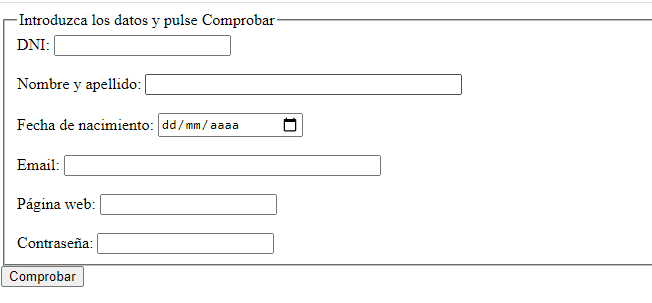

Enunciado
En este primer caso práctico debe realizar las siguientes tareas:
Cree un código HTML donde haya 5 campos a los que tendrá que aplicarles una validación con JavaScript. Los campos son los siguientes:
- DNI, se deberá validar como 00000000 - Z
- Nombre, deberá tener como mínimo un nombre y un apellido, como máximo dos nombres y dos apellidos.
- Fecha de nacimiento, formato dd/mm/aaaa
- Email formato aaaa@xxxx.zzz
- Web formato http://www.xxxx.yyy
- Contraseña entre 6 y 20 caracteres.
NOTA: Los campos no se podrán dejar en blanco
El formulario se presentará como el ejemplo siguiente:
Por último, identifique las fases que intervienen en la integración del formulario en una página web.
Actividad asociada al CE1.1
Identificar las fases que intervienen en la verificación de la integración de componentes en páginas.
Solución
Formulario verificado con JavaScript
Formulario validado con HTML5
Actividad asociada al CE1.1
Con JavaScript
Las fases que intervienen en la integración del formulario en una página web son las siguientes:
- Diseño del formulario: Se define la estructura y apariencia visual del formulario en HTML.
- Validación de campos con JavaScript: Se utiliza JavaScript para realizar la validación de los campos ingresados por el usuario, aplicando las reglas específicas establecidas.
- Manejo de eventos: Se utilizan eventos de JavaScript, como el evento "onsubmit" en el ejemplo, para ejecutar una función de validación cuando se envía el formulario.
- Procesamiento en el servidor: Una vez que se ha realizado la validación en el cliente, el formulario se envía al servidor para su procesamiento adicional, como almacenamiento en una base de datos o envío de correos electrónicos.
- Retroalimentación al usuario: El servidor puede enviar una respuesta al cliente para informar si la información se procesó correctamente o si se encontraron errores. Esta retroalimentación se muestra al usuario en la página web.
En resumen, las fases involucradas son: diseño del formulario, validación de campos con JavaScript, manejo de eventos, procesamiento en el servidor y retroalimentación al usuario.
Con HTML5
Las fases que intervienen en la verificación de la integración de componentes en páginas utilizando la versión del formulario hecha con HTML5 son similares a las mencionadas anteriormente. A continuación, se detallan las fases:
- Diseño del formulario: Se define la estructura y la apariencia visual del formulario en HTML.
- Validación en el cliente: Utilizando las características de validación en HTML5, se aplican las restricciones y validaciones a los campos directamente en el cliente. Esto incluye el uso de atributos como required, pattern, type, minlength, maxlength, entre otros, para especificar las reglas de validación.
- Manejo de eventos: Los eventos HTML5, como onsubmit en el formulario, se utilizan para ejecutar funciones de validación personalizadas antes de enviar los datos al servidor.
- Procesamiento en el servidor: Una vez que se ha realizado la validación en el cliente, el formulario se envía al servidor para su procesamiento adicional, como almacenamiento en una base de datos o procesamiento de los datos recibidos.
- Retroalimentación al usuario: El servidor puede enviar una respuesta al cliente, que se muestra en la página web, para informar si la información se procesó correctamente o si se encontraron errores durante el procesamiento.
Es importante tener en cuenta que, con la validación en HTML5, gran parte de la validación se realiza en el cliente antes de enviar los datos al servidor. Esto ayuda a mejorar la experiencia del usuario al proporcionar retroalimentación instantánea sobre los errores de validación sin necesidad de interactuar con el servidor. Sin embargo, la validación en el cliente no reemplaza la validación en el servidor, ya que aún es necesario validar y procesar los datos recibidos para garantizar su integridad y seguridad.